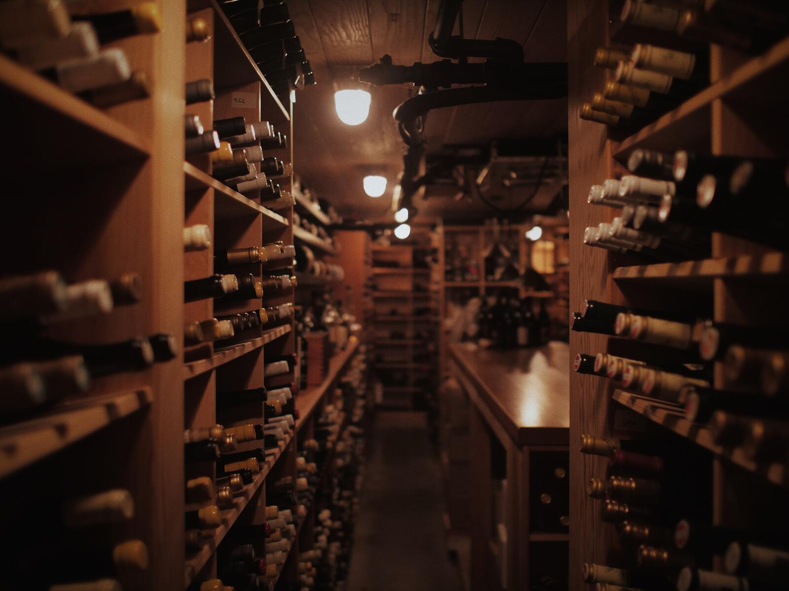
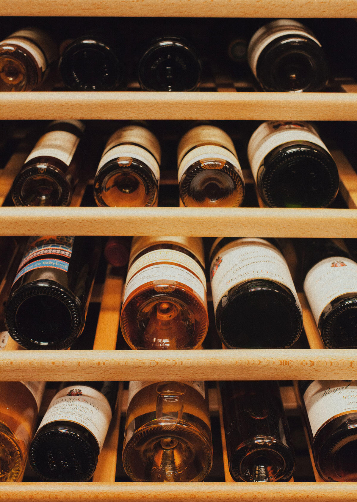

"The finest wine program in the Pacific Northwest by a mile." - THE NEW WINE REVIEW


Awards & History
Canlis became a world-class wine destination in 1997, the first year of its 28 consecutive Wine Spectator Magazine Grand Awards. The restaurant is one of a handful in the world to be trusted with the honor for that length of time. In 2017, our wine program took home the James Beard award for Outstanding Wine Program. Since then, it has helped train four Master Sommeliers and nine advanced sommeliers. We've produced wines with Alois Kracher, Buty, Jean Milan, Hirsch, and Guiborat & Fils. We've routinely played hosts to the best winemakers and wineries in the world, like Château Latour, Grace Family, Penfolds, Cayuse, Piero Antinori, Angelo Gaja and María López de Heredia.
While this is all quite fancy, what distinguishes the Canlis wine program and the sommeliers who run it is their singular ability to relate to other people, particularly those who just like to enjoy a bottle with dinner, and then move on.
The wine program at Canlis, led by Wine Director Ally Lanoue, is founded on a team of educated wine professionals, the highest quality amenities, and the warm and reputable service for which Canlis is famous. There is also one very juicy wine list. We look forward to sharing the world of wine with you.
We invite you to download the list and enjoy a good read, or skip it all together and let us do the work of finding the right wine for your evening.
Corkage Policy: We're happy to open two 750ml bottles per reservation, for $50 per bottle. We ask that the bottles not be on our list.
WINE LIST (PDF Download)